01


Sport automobile · Reportage
La vitesse
comme langage.
Dans les paddocks, chaque bruit, chaque geste et chaque silence raconte la précision d’un monde construit au millième de seconde.
Découvrir le récit